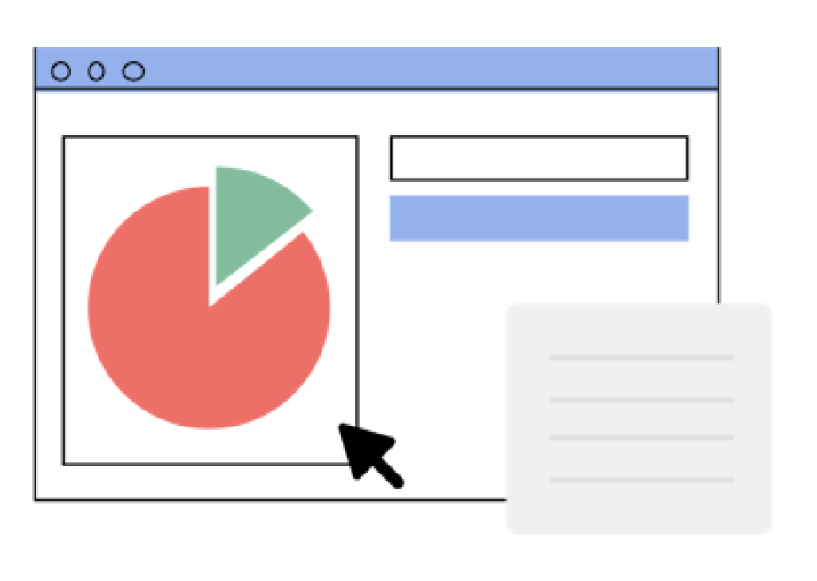
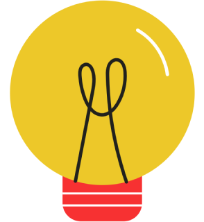
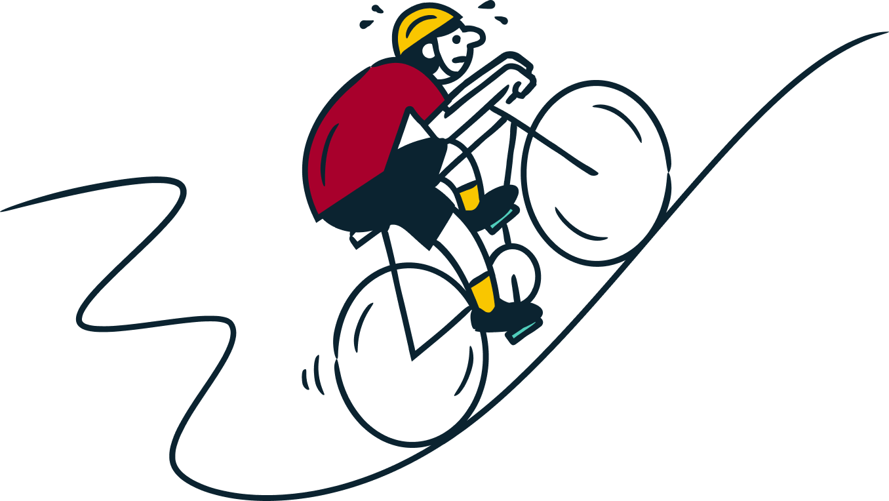

Мгновенный анализ тональности
Понимаем, позитивный, нейтральный или негативный перед нами текст.
Помогаем быстро оценить настроение потока сообщений без ручного чтения.
Сервис классифицирует настроение текста: от позитивного до негативного.
Сервис помогает находить токсичные сообщения, отслеживать динамику отзывов и видеть, как люди реагируют на ваши продукты и сервисы.
Понимаем, позитивный, нейтральный или негативный перед нами текст.
Помогаем быстро оценить настроение потока сообщений без ручного чтения.
Вставьте текст, нажмите одну кнопку — и сразу увидите результат.
Цветовые метки и графики делают выводы понятными всем, не только разработчикам.
Подходит для отзывов, обращений граждан, комментариев и чат-ботов.
Архитектура легко расширяется до API и интеграций с существующими системами.

Техническая реализация
Используем русскоязычную модель BERT для анализа тональности текстов.

Базовая модель: blanchefort/rubert-base-cased-sentiment-rusentiment — русскоязычная BERT-подобная модель, предварительно обученная на корпусе RuSentiment.
Задача: классификация эмоциональной тональности отзывов москвичей на 3 класса (негатив / нейтрально / позитив).
Дообучение: модель fine-tuned на предоставленном датасете отзывов.
Качество: macro-F1 на валидации ≈ 0.75.
Пользователь загружает CSV с отзывами.
Текст токенизируется и подаётся в модель RuBERT.
Тексты автоматически нормализуются и токенизируются через RuBERT-токенизатор.
Интерфейс показывает итоговую метку 0 / 1 / 2, а также дополнительные метрики и визуализацию.
Язык: Python.
ML: PyTorch, HuggingFace Transformers (RuBERT), scikit-learn для метрик (macro-F1, accuracy).
Обработка данных: pandas, NumPy.
Backend: FastAPI с REST-эндпоинтом для инференса модели.
Frontend: web-интерфейс на HTML / CSS / JS для загрузки файлов, показа прогнозов и визуализаций.
Команда проекта
MoodWare
Финансовый университет при Правительстве Российской Федерации, 3 курс
Отвечаю за дизайн и реализацию интерфейса веб-приложения, а также участвую в выборе и дообучении модели для анализа тональности.
Ссылка на GitHub @dievavarОтвечаю за серверную часть: API для вызова модели, обмен данными между фронтендом и ML-сервисом, базовую инфраструктуру и деплой.
Ссылка на GitHub @freefreezyЗанимаюсь исследованием и настройкой моделей на базе BERT: анализом датасетов, дообучением и оценкой качества классификации тональности.
Ссылка на GitHub @olya_shalashova
Проверьте, как звучат отзывы, обращения граждан или сообщения в чате.
Начать анализ